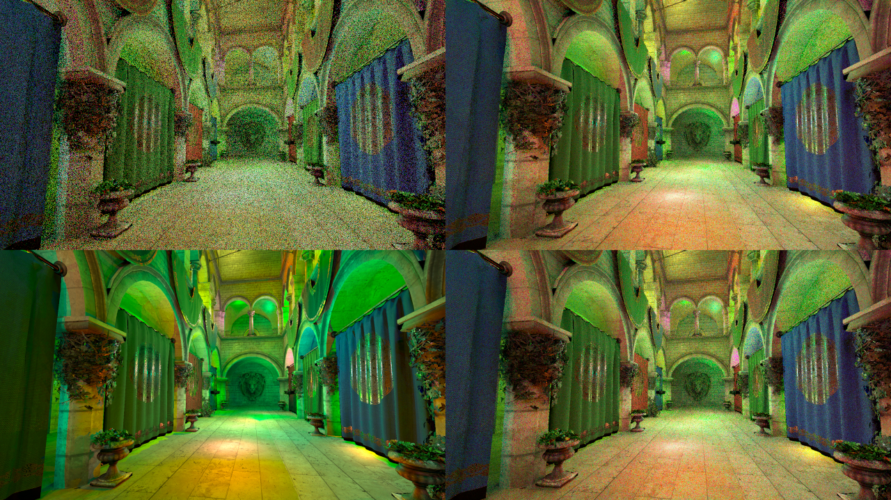
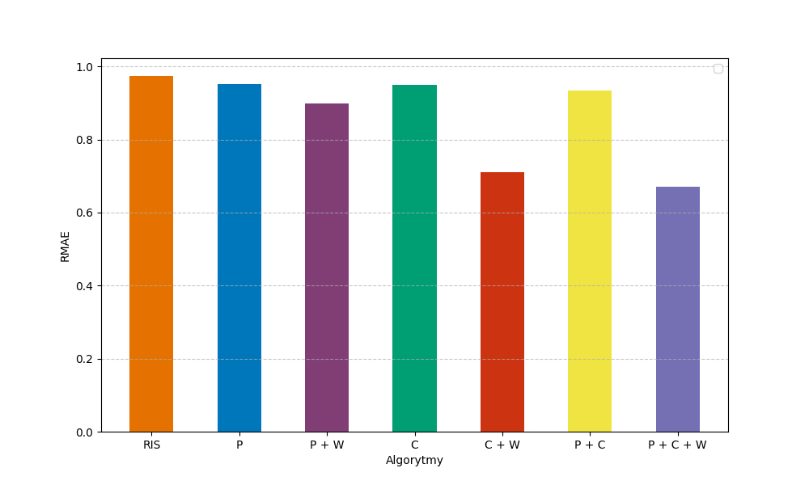

Real-time ray tracing has gained significant attention in recent years, driven by the increasing computational power of modern GPUs and the introduction of hardware-accelerated ray tracing in DirectX Raytracing (DXR). Traditional ray tracing algorithms, while capable of producing highly realistic images, suffer from high computational complexity, making them impractical for real-time applications. To address this issue, advanced sampling and resampling techniques, such as the ReSTIR (Reservoir-based Spatiotemporal Importance Resampling) algorithm, have been developed. ReSTIR improves the efficiency of direct lighting calculations by reusing and resampling a set of light samples across space and time, significantly reducing noise or improving performance without sacrificing visual quality.
This thesis focuses on implementing and analysing the ReSTIR DI (Direct Illumination) algorithm in a path tracer built using DirectX 12 and DXR, based on The Reference Path Tracer. Through a series of tests and performance measurements, the results demonstrate that ReSTIR can significantly enhance rendering efficiency by reducing variance in lighting calculations while maintaining real-time frame rates. However, the algorithm also introduces systematic bias, which requires additional expensive techniques to mitigate. The tests also show how the individual components of the algorithm affect image quality and rendering times, and that the lack of visibility reuse significantly reduces the gains from the other components.
The implementation extends The Reference Path Tracer, a DX12 DXR application, with a ReSTIR DI pipeline. Key technical aspects:
- DirectX 12 + DXR ray tracing pipeline
- G-buffer
- Weighted Reservoir Sampling (WRS)
- Resampled Importance Sampling (RIS)
- Temporal reservoir reuse
- Spatial reservoir reuse
- Visibility ray pass
- HLSL compute & ray generation shaders
- Tested on Sponza, Bistro and Sun Temple scenes
Monte Carlo ray tracing produces physically correct images but requires many samples per pixel to converge to a noise-free result — far too many for real-time applications. ReSTIR addresses this by using weighted reservoir sampling (WRS) to draw from an importance-sampled distribution, then reusing reservoirs from neighbouring pixels (spatial reuse) and from the previous frame (temporal reuse). This amortises the sampling cost dramatically across the screen and over time.
The thesis implements ReSTIR DI — the direct illumination variant — which focuses on sampling from potentially millions of light sources. The implementation is built on top of The Reference Path Tracer, a GPU-based DX12 application by NVIDIA from the Ray Tracing Gems 2 book, which serves as the integration and evaluation baseline.
"ReSTIR reuses and resamples light samples across space and time, significantly reducing noise while maintaining real-time frame rates."
The ReSTIR DI pipeline is composed of several independently toggleable passes. The thesis systematically evaluates all combinations to isolate the contribution of each component:
| RIS | Resampled Importance Sampling baseline — candidate generation only, no reuse. Acts as the reference. |
| P | Spatial reuse — reservoirs from the nearby pixels are combined with the current pixel's one. |
| C | Temporal reuse — reservoirs from the previous frame's reprojected position are combined with the current frame's candidates. |
| W | Visibility reuse — a shadow ray is cast for each light, before any reuse passes, so that unoccluded samples do not spread to nearby pixels. This assumes that occlusion of lights is somewhat local, which is not the case for shadow edges. Significantly reduces bias at the cost of extra ray budget. |
Thesis implements two variants of the ReSTIR DI algorithm: biased and unbiased.
Moreover, seven configurations have been tested — RIS, P, P+W, C, C+W, P+C, P+C+W — which represent the Cartesian product of toggling all components, allowing the relative impact of each to be measured in isolation.
Sponza scene. 200 point lights placed randomly. Each 2×2 panel below shows four configurations under identical lighting and camera conditions.

Bistro scene. 600 point lights placed randomly. Each 2×2 panel below shows four configurations under identical lighting and camera conditions.

Relative Mean Absolute Error (RMAE) measures how far each configuration deviates from the high-sample-count reference render. Lower RMAE means closer to ground truth. The chart covers all seven tested configurations on the Sponza scene.
